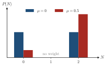
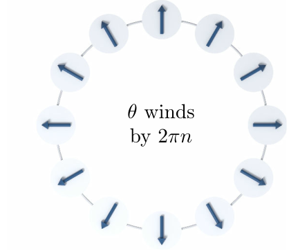

Advanced Quantum Materials 2027 · All lectures · Lecture notes
Session 5. Superconductivity, Nambu Representation and Majorana Physics
5.6 Why pairing does not conserve the particle number
Let us now show in an exact way the statement of Section 1.15 that the electron number fluctuates, instead of only stating it. We take the eigenvalue equation \(H_{\text{MF}}|G\rangle = E|G\rangle\) for the Hamiltonian in (5.4), and we expand the ground state in the occupation-number basis, which is the Fock basis, ordered by the total particle number \(N\), as \(|G\rangle = \sum_N a_N |N\rangle\). The hopping and chemical-potential terms in (5.4) conserve \(N\), since each of them has one \(c^\dagger\) and one \(c\). The pairing terms \(\Delta_n c_{n\uparrow}^\dagger c_{n\downarrow}^\dagger\) and \(\Delta_n^* c_{n\downarrow}c_{n\uparrow}\) change \(N\) by \(+2\) and \(-2\) respectively. The key point is that no term in \(H_{\text{MF}}\) ever changes \(N\) by \(\pm 1\). So \(H_{\text{MF}}\) only connects Fock states whose particle numbers differ by an even integer. For \(|G\rangle\) to be an eigenstate, \(a_N\) can then be nonzero only inside one fixed parity class of \(N\), either all even or all odd. However, this says nothing about which even or odd values of \(N\) appear, and in general \(a_N \ne 0\) for several values of \(N\) in that class, for example \(N=0,2,4,\dots\) at the same time. The mean-field ground state is therefore not an eigenstate of the total number operator \(\hat N\), even though it has a well-defined fermion parity. This is the exact meaning of the statement that a superconductor has a fluctuating electron number but a fixed parity. Session 1 pointed this out in its discussion of the superposition puzzle of the quantum dot, in Section 1.5.

The mean-field ground state of (5.4) is measured many times, and the total electron number is read each time. What do we find?
Show the answers
- A. ✗ False
This is false. For one site at \(\mu=0\) and \(\Delta=0.5\), the ground state is \((|0\rangle-|2\rangle)/\sqrt2\). We find \(N=0\) in half of the runs and \(N=2\) in the other half, because the pairing term does not commute with \(\hat N\).
- B. ✓ True
This is true. The pairing terms of (5.4) change \(N\) by two, so the parity of \(N\) is fixed and several values of one parity appear. In the one-site example only \(N=0\) and \(N=2\) occur.

Probability of \(N\) electrons in the ground state of one site with \(\Delta=0.5\). The weights of \(N=0\) and \(N=2\) change with \(\mu\), and \(N=1\) never appears. - C. ✗ False
This is false. In the one-site example the state \((|0\rangle-|2\rangle)/\sqrt2\) never gives \(N=1\). Every term of \(H_\text{MF}\) changes \(N\) by \(0\) or \(\pm2\), so the parity is conserved.
5.7 The gauge transformation in explicit form
We already wrote the gauge transformation in second quantization in Session 1, in equation (1.10), as \(c \to c\, e^{i\varphi}\), \(c^\dagger \to c^\dagger e^{-i\varphi}\). It is the second-quantized version of the statement that the phase of a first-quantized wave function has no physical meaning. Let us now check explicitly which terms of a realistic Hamiltonian stay invariant under this transformation and which do not. Ordinary hopping \(c_i^\dagger c_j\) is invariant, since the two phases cancel, as \(c_i^\dagger c_j \to e^{-i\varphi}c_i^\dagger \cdot e^{i\varphi} c_j = c_i^\dagger c_j\). The same cancellation protects essentially every other bilinear term that we have seen so far, such as magnetic terms that depend on spin, spin-orbit coupling and any density-density interaction term \(c_i^\dagger c_i c_j^\dagger c_j\), because all of them are built from the same number of creation and annihilation operators, which pair up index by index.
The pairing term is the only exception. Under the same transformation,
\[\Delta\, c_{n\uparrow}^\dagger c_{n\downarrow}^\dagger \;\longrightarrow\; \Delta\, e^{-2i\varphi}\, c_{n\uparrow}^\dagger c_{n\downarrow}^\dagger, \tag{5.5}\]
it gets the phase twice, because both operators are creation operators and not one creation and one annihilation operator. No choice of \(\varphi \ne 0 \pmod \pi\) leaves this term invariant, so a Hamiltonian with a nonzero \(\Delta\) is not gauge invariant term by term. In an equivalent way, if we write the transformation as acting on the order parameter itself, \(\Delta \to \Delta\, e^{2i\varphi}\), then any fixed phase of \(\Delta\) is a choice that the ground state makes spontaneously, which is the signature of continuous symmetry breaking. This is the same logic that Session 1 used to show the gauge symmetry breaking of equation (1.9), now applied in full detail, and we have now seen why the factor is \(2\varphi\) and not \(\varphi\).

Under the gauge transformation of this section the pairing term gets the phase \(e^{-2i\varphi}\). For which angle does \(\Delta\, c_{n\uparrow}^\dagger c_{n\downarrow}^\dagger\) stay unchanged?
Show the answers
- A. ✗ False
This is false. For \(\varphi=\pi/2\) the factor is \(e^{-i\pi}=-1\). Then \(\Delta\to-\Delta\), which is a different mean-field state, and we only recover the same term after \(\varphi=\pi\).
- B. ✓ True
This is true. The factor \(e^{-2i\varphi}\) is \(e^{-2\pi i}=1\), so the pairing term does not change. The same holds for \(\varphi=0\).
- C. ✗ False
This is false. For \(\varphi=\pi/4\) the factor is \(e^{-i\pi/2}=-i\). Then \(\Delta\to-i\Delta\), which has the phase shifted by a quarter turn.
- In Section 5.8 we write the pairing Hamiltonian in a basis where it can be diagonalized, even though it does not conserve \(N\).
- In Section 8.6 the BCS state (8.6) of spinons also mixes different particle numbers, and a constraint of one fermion per site removes this freedom.
- In Section 8.10 a gauge degree of freedom comes back as an emergent symmetry of a quantum spin liquid, in analogy with the phase of \(\Delta\).